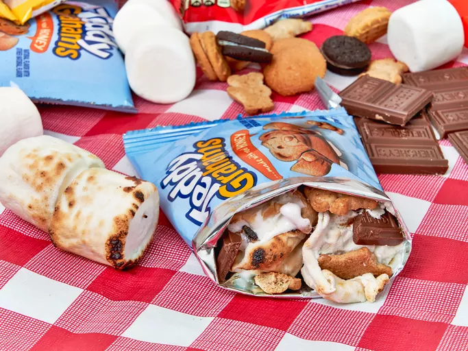

S'mores in a Bag!
They only had the one picture.
Preamble
I feel bad about how I talked to the kids earlier, so for dessert we're "making" S'mores in a Bag!
Description
Nicole over on allrecipes.com masterfully describes this as "more of a concept than a recipe."
Roast some marshmallows, and toss them into a bag of snack cookies and chocolate, and YUM. You'll love the result.
Ingredients
- 2 snack-sized bags of cookies, such as Nutter Butter®, Teddy Grahams®, Mini Oreos® or Nilla Wafers®
- 1 1/2 ounces chocolate candy bar, broken into pieces, such as Reese’s® Peanut Butter Cups or Hershey’s® chocolate bar
- 6 jumbo marshmallows (I get the feeling this has to be exact)
Steps
- Open every bag you have
- Dump every bag onto a surface of your choosing
- Roast 3 (this has to be exact) marshmallows over a campfire (hope you have a campfire).
- Nicole says to add the marshmallows to a bag (I'm guessing any of the bags you opened?)
- Now she says to "allow the warmth of the marshmallows to melt the chocolate." So let's toss back in the chocolate (or nutter butters, or teddy grahams, or nilla wafers).
- And this is where Nicole really loses me. She says to "serve immediately." So what's the point of the bags? And how do you eat it? Do you squeeze the contents into your mouth? I'm not understanding her "concept."